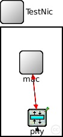
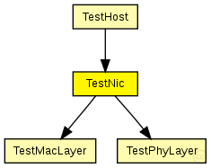
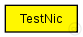

This documentation is released under the Creative Commons license
This documentation is released under the Creative Commons license(no description)
The following diagram shows usage relationships between types. Unresolved types are missing from the diagram. Click here to see the full picture.
The following diagram shows inheritance relationships for this type. Unresolved types are missing from the diagram. Click here to see the full picture.
If a module type shows up more than once, that means it has been defined in more than one NED file.
| TestHost (compound module) | (no description) |
| Name | Type | Default value | Description |
|---|---|---|---|
| connectionManagerName | string |
name of the ConnectionManager module |
| Name | Value | Description |
|---|---|---|
| display | bgb=101,180,white,,;bgp=10,10 |
| Name | Direction | Size | Description |
|---|---|---|---|
| radioIn | input |
radioIn gate for sendDirect |
| Name | Type | Default value | Description |
|---|---|---|---|
| phy.testBaseDecider | bool |
shall a TestBaseDecider be used as Decider? |
|
| phy.coreDebug | bool | ||
| phy.usePropagationDelay | bool |
Should transmission delay be simulated? |
|
| phy.thermalNoise | double |
the strength of the thermal noise [dBm] |
|
| phy.useThermalNoise | bool |
should thermal noise be considered? |
|
| phy.analogueModels | xml |
Specification of the analogue models to use and their parameters |
|
| phy.decider | xml |
Specification of the decider to use and its parameters |
|
| phy.sensitivity | double |
The sensitivity of the physical layer [dBm] |
|
| phy.maxTXPower | double |
The maximum transimission power of the physical layer [mW] |
|
| phy.timeRXToTX | double |
switchTimes [s]: |
|
| phy.timeRXToSleep | double | ||
| phy.timeTXToRX | double | ||
| phy.timeTXToSleep | double | ||
| phy.timeSleepToRX | double | ||
| phy.timeSleepToTX | double | ||
| phy.initialRadioState | int |
module TestNic { parameters: string connectionManagerName; //name of the ConnectionManager module @display("bgb=101,180,white,,;bgp=10,10"); gates: input radioIn; // radioIn gate for sendDirect submodules: phy: TestPhyLayer { parameters: @display("p=60,150;i=prot3"); } mac: TestMacLayer; connections: phy.upperGateOut --> mac.lowerGateIn; phy.upperGateIn <-- mac.lowerGateOut; phy.upperControlOut --> { @display("ls=red;m=m,50,50,75,0"); } --> mac.lowerControlIn; phy.upperControlIn <-- { @display("ls=red;m=m,25,0,25,0"); } <-- mac.lowerControlOut; radioIn --> phy.radioIn; }
This documentation is released under the Creative Commons license